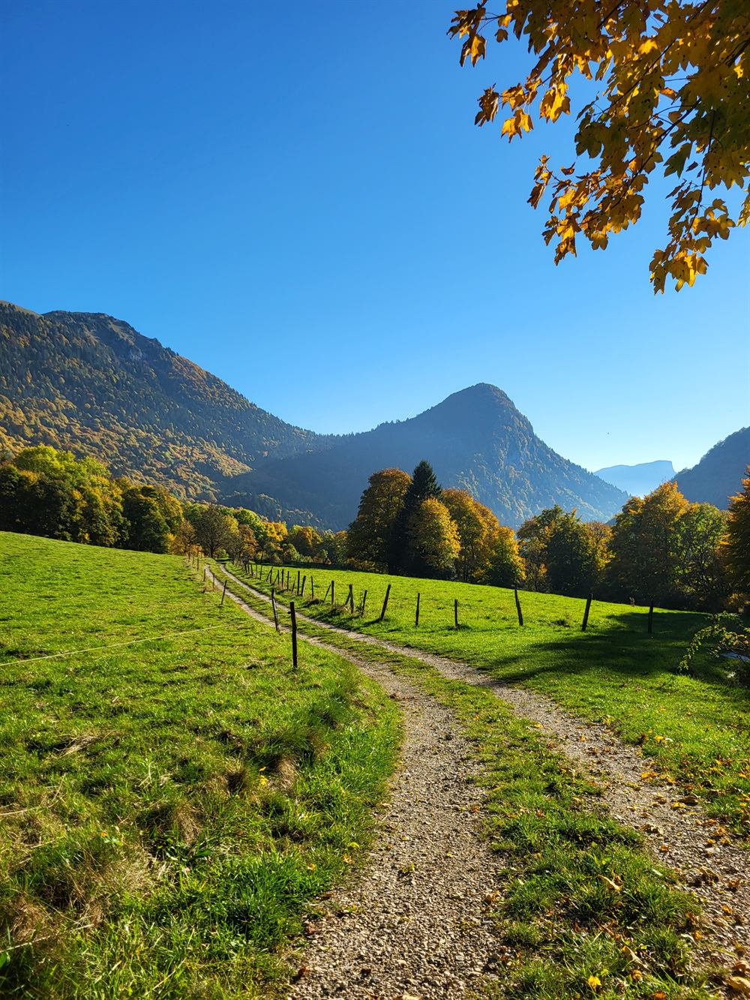

Trois jours pour explorer votre rêve, dépasser vos freins et avancer vers une décision éclairée.
- Durée
- 3 jours
- Lieu
- Massif des Bauges, Savoie
- Groupe
- 4 à 6 personnes
- Format
- Marche le matin, ateliers l'après-midi
- Dates
- À venir
- Tarif
- À préciser
Vous avez un rêve. Et si vous osiez enfin l'explorer ?
Changer de vie, créer votre activité, partir vivre ailleurs, entreprendre un grand voyage, écrire un livre... Vous y pensez souvent, l'idée vous fait vibrer. Mais quelque chose vous retient, et une question revient : « Et si je me trompais ? »
Il existe pourtant une différence essentielle entre explorer un rêve, décider de le réaliser et s'engager concrètement. Vous pouvez vous renseigner, rencontrer des personnes, tester une idée... sans vous engager définitivement.
Oser, ce n'est pas foncer tête baissée. C'est d'abord s'autoriser à imaginer que quelque chose est possible, puis se donner les moyens de l'explorer, et seulement ensuite choisir en connaissance de cause. Vous avez aussi le droit de changer d'avis : l'essentiel est que votre choix vous appartienne.
Du rêve à la décision : avancer par étapes
- Oser rêver grandAccueillir votre aspiration sans la réduire immédiatement à ce qui semble possible aujourd'hui.
- Décider d'explorerVous autoriser à enquêter sur votre rêve, sans vous obliger à le réaliser.
- Collecter des informationsComprendre les conditions, les ressources nécessaires, les contraintes et les opportunités.
- Explorer les optionsDécouvrir différentes façons de donner vie à votre rêve, y compris des versions progressives.
- Peser et choisirAnalyser avantages, risques et bénéfices, sans rechercher une décision parfaite.
- Agir à la mesure de votre décisionChoisir la prochaine action adaptée à votre niveau de certitude et d'engagement.
Trois jours pour oser, explorer et choisir
- JOUR 1 · OSERDonner toute sa place à son rêveRaconter votre rêve, lui donner forme et explorer ce qu'il représente pour vous. Identifier aussi les peurs, les hésitations et les croyances qui limitent vos ambitions.Intention : vous autoriser à rêver grand et considérer votre aspiration comme une possibilité à explorer.
- JOUR 2 · EXPLORERDépasser les freins et ouvrir les possiblesDistinguer les obstacles intérieurs (peurs, doutes, exigences) des contraintes concrètes (temps, argent, compétences, organisation), et transformer ces obstacles en questions à investiguer.Intention : retrouver une marge de manœuvre et construire une véritable stratégie d'exploration.
- JOUR 3 · CHOISIRDécider avec discernementDécouvrir votre manière habituelle de décider, comparer des options en acceptant une part d'incertitude et construire votre feuille de route personnelle.Intention : repartir avec une méthode pour décider, une direction de travail et un premier pas concret.
La montagne, un espace pour retrouver son audace

La montagne nous rappelle qu'un sommet ne se rejoint pas toujours par le chemin imaginé au départ. Il existe des itinéraires différents, des détours parfois nécessaires et des paysages inattendus. Il n'est pas nécessaire de connaître chaque détail du parcours pour commencer à l'explorer.
Les après-midi, les ateliers en salle prolongent les découvertes par des exercices créatifs, des mises en situation et des échanges.
Des expériences pour se découvrir autrement
Quelques expériences que vous pourrez vivre pendant ces trois jours.
- Mon rêve en grandOser sans se censurer
Par le dessin, le collage ou l'écriture, donner forme à votre rêve dans sa version la plus inspirante, en mettant de côté pour un temps les objections.
- Les gardiens du seuilComprendre ce qui me retient
Identifier les peurs et les résistances, ce qu'elles cherchent à protéger, et distinguer les inquiétudes imaginées des obstacles réels.
- L'enquête des possiblesExplorer sans s'engager
Transformer votre rêve en questions concrètes et construire votre première feuille d'enquête.
- Le carrefour des décisionsDécouvrir ma stratégie de choix
Explorer votre manière de décider, vos critères et une méthode pour comparer les possibilités.
- Mon premier pasTransformer l'envie en action
Construire une feuille de route et choisir une première action concrète : une information, un rendez-vous, une rencontre, un test.
Ces expériences sont proposées dans le respect du rythme et de la liberté de chacun. Leur déroulement peut être adapté aux besoins du groupe.
Ce que ces trois jours peuvent vous apporter
- La liberté de regarder votre rêve en grand, sans vous censurer.
- Une meilleure compréhension des peurs et des croyances qui freinent votre élan.
- Une vision plus réaliste des contraintes et des ressources nécessaires.
- Une méthode pour collecter les informations utiles avant de vous engager.
- Davantage de sérénité face à l'incertitude et aux choix imparfaits.
- Une feuille de route concrète et le plaisir de retrouver de l'audace.
Vous ne repartirez pas nécessairement avec la décision de réaliser votre rêve. Vous repartirez avec les moyens de l'explorer et de choisir votre chemin en connaissance de cause. Et si votre choix final était de ne pas le réaliser, ce serait aussi une avancée, s'il naît d'une exploration lucide plutôt que de la peur.
Ce stage est fait pour vous si...
Ce stage s'adresse aux personnes qui ont déjà identifié un rêve, une aspiration ou un projet important. Il ne s'agit pas de chercher ce qui pourrait vous faire rêver, mais d'oser explorer un rêve qui existe déjà.
- Vous portez un rêve ou un projet qui vous tient profondément à cœur.
- Vous y pensez depuis longtemps sans réussir à lui donner une place concrète.
- Vous avez peur que le premier pas vous engage définitivement.
- Vous attendez le bon moment ou la certitude de faire le bon choix.
- Vous souhaitez dépasser vos freins sans ignorer les contraintes réelles.
- Vous souhaitez apprendre à décider plus librement et à avancer par étapes.
Infos pratiques
- Durée
- 3 jours
- Lieu
- Massif des Bauges, Savoie
- Groupe
- 4 à 6 participants
- Dates
- À venir
- Tarif
- À préciser
- Hébergement et repas
- Modalités à préciser
Les marches sont adaptées aux conditions météorologiques et aux capacités du groupe. Le niveau de marche requis est précisé avant l'inscription.
Le rythme des journées
- Le matin : marche en montagne, questionnements, expériences et temps de réflexion.
- À midi : une pause déjeuner pour se retrouver et partager.
- L'après-midi : ateliers créatifs, exercices de coaching, mises en situation et échanges.
- En fin de stage : une feuille de route personnelle et une première action concrète.
Et si vous donniez enfin une chance à votre rêve ?
Vous n'avez pas besoin de tout décider aujourd'hui. Vous pouvez simplement choisir de commencer à explorer. Oser explorer, c'est déjà se mettre en mouvement.
L'Élan des Cimes · Retrouver son élan, choisir son chemin.